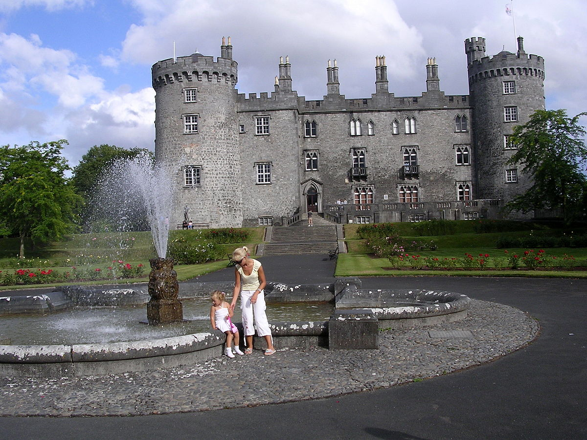
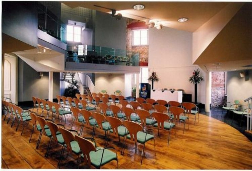

Kilkenny Castle Today

Today Kilkenny Castle is a major tourist attraction in the City of Kilkenny. It was sold to the people of Kilkenny for a nominal sum of £50 by Arthur Butler, 6th Marquess of Ormonde, and managed by the Irish Office of Public Works since 1969.
The Parade Tower is a conference venue available for events and weddings, and has been used for graduating ceremonies by the Kilkenny Campus of National University of Ireland.